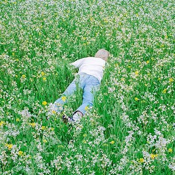

Worlds
Worlds, Porter Robinson's debut electropop album.

Nurture
Nurture, Porter Robinson's second electropop album.

Smile :D
Smile :D, Porter Robinson's indietronica album.
Porter Robinson is an American DJ, singer, songwriter, and record producer. His genres include: electro house, synth-pop, indie pop, and most importantly electronic dance music.
Worlds, Porter Robinson's debut electropop album.
Nurture, Porter Robinson's second electropop album.
Smile :D, Porter Robinson's indietronica album.